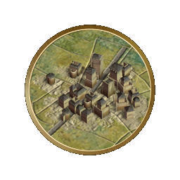

“这就是爱国者们所要宣扬的：无论我们走到哪里，在我们心目中最好的地方永远是我们的祖国。”
——奥利弗· 高德史密斯（爱尔兰诗人）
文明百科主页
“这就是爱国者们所要宣扬的：无论我们走到哪里，在我们心目中最好的地方永远是我们的祖国。”
——奥利弗· 高德史密斯（爱尔兰诗人）
文明百科
欢迎来到文明百科！在这里您将了解到关于这个游戏各方面的细节。点击屏幕顶端的选项卡将带您到文明百科的各主要部分。屏幕左边的导航条将会显示当前部分各个条目。点击条目直接查看详细信息。
更新说明
在线百科版本：“新奇世界”资料片v1.0.3.276
内容更新时间：2014-12-25
内容更新时间：2014-12-25